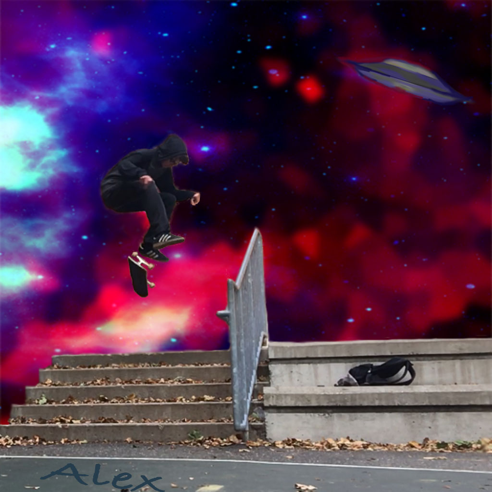

During the Fall 2018 Multi Media class, we worked on numerous projects. Some of these involved things like the basics of photoshop, animation, video editing, sound editing, and right now the basics of HTML coding. This site will display some of the projects that I have worked on throughout the duration of this semester.
Self Portrait Assignment
Project Description
The Self Portrait Project was one of the first projects we did. The assignment was to create an image in Adobe Photoshop that represents ourselves. It did not necessarily have to be a picture your face, it just needs to somewhat represent the person you are.
My Self Portrait

My self portrait is a picture of me skateboarding down a set of stairs. I picked this because I have a passion for skateboarding and have been doing it for a large portion of my life. I photoshopped the background to have a blue purple and red space aesthetic beacuse I am fascinated by space and the colors I picked I find pleasing to look at.